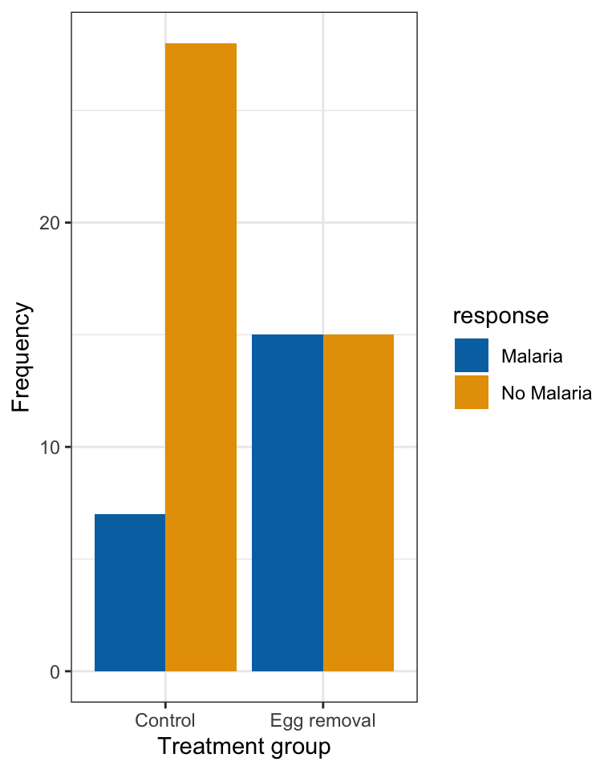
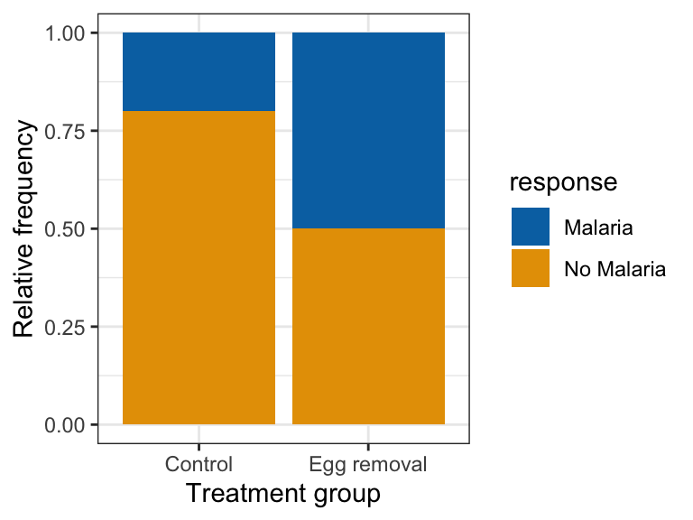
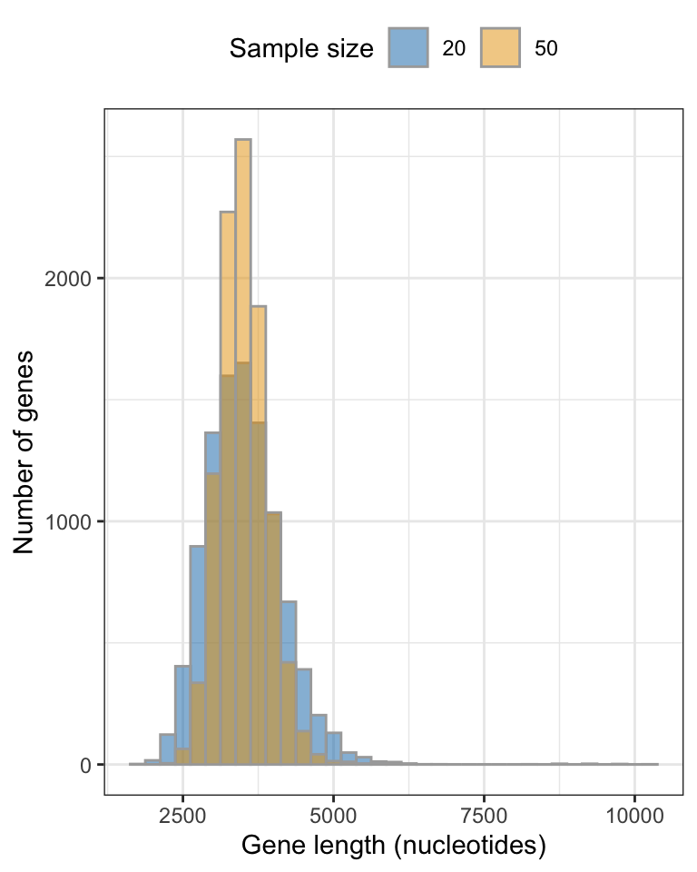
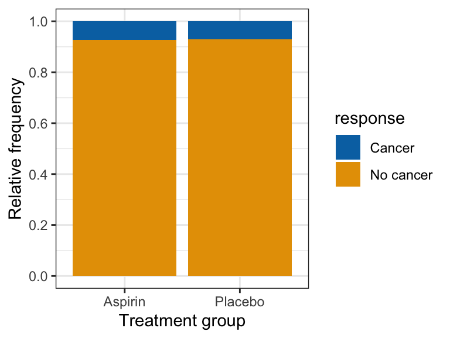
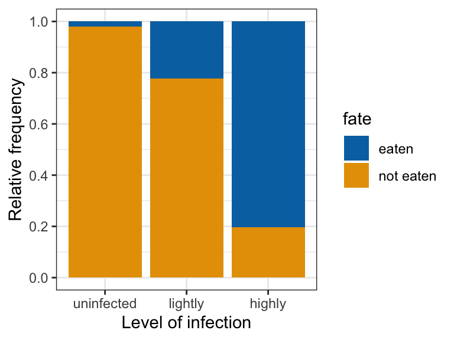

library(dplyr)
library(ggplot2)
library(infer)
library(biol202)Colour-blind friendly figures
Tutorial learning objectives
- Understand why the default
ggplot2colours can be hard to tell apart for some readers - Learn how to choose a colour-blind friendly palette and apply it with
scale_fill_manual - Re-create each of the coloured figures from earlier tutorials using accessible colours
Why this matters
Roughly 1 in 12 men and 1 in 200 women have some form of colour-vision deficiency (often called “colour-blindness”). The most common form makes it hard to tell red from green. The default fill colours in ggplot2 (a salmon-red and a blue-green for two categories) can look very similar to those readers, and some of the manual colours used in earlier tutorials (for example, dark red and gold) can also be a problem.
A figure is only useful if every reader can read it. Choosing an accessible palette costs almost nothing, so it is a good habit to adopt for your own figures.
Note
The earlier tutorials were written before we adopted accessible colours, so a few of their figures use colours that are not ideal. Each of those figures now has a note pointing here. Nothing about the data, statistics, or interpretation changes in the versions below: only the fill colours differ.
Load packages and import data
This tutorial re-uses code and datasets from tutorials 7, 8, and 11, so we need the same packages.
Now load the datasets used by the five figures (all were introduced in earlier tutorials):
data(bird_malaria) # Tutorial 7
data(humangenelength) # Tutorial 8
data(cancer) # Tutorial 11
data(worm) # Tutorial 11Choosing an accessible palette
We will use colours from the Okabe-Ito palette, which was designed by Masataka Okabe and Kei Ito so that its colours can be distinguished by people with the common forms of colour-vision deficiency (see the designers’ page). Each colour is stored as a “hex code”, a six-character code (preceded by #) that R understands as a specific colour.
All of the figures in this tutorial have only two categories, so we only need two colours. We pick a blue and an orange, because these two differ strongly in both hue and lightness. That means they stay distinguishable even if the figure is printed in black and white.
We store the two colours in a vector (a single object holding several values) so that we can reuse them without retyping the codes:
okabe_blue <- "#0072B2"
okabe_orange <- "#E69F00"
two_colours <- c(okabe_blue, okabe_orange)
two_colours
#> [1] "#0072B2" "#E69F00"
Note
New tool The scale_fill_manual function from ggplot2 lets you choose exactly which colour is used for each category of the “fill” variable. The colours are assigned in the order of the categories (the “levels”) of that variable, so the first colour goes to the first level, the second colour to the second level, and so on.
Every figure below follows the same recipe: take the original code, and add one line, scale_fill_manual(values = two_colours), after the geom_ line.
Tip
If you need more than two colours, base R includes the whole Okabe-Ito palette. Run palette.colors(palette = "Okabe-Ito") to see its eight colours. The viridis family of scales (scale_fill_viridis_d for categories) is another well-tested accessible option.
Tutorial 7: grouped bar graph
This is the accessible version of the grouped bar graph from Tutorial 7. First we re-create the frequency table that the graph needs:
bird_malaria.tidy <- bird_malaria %>%
group_by(treatment) %>%
count(response)Then the graph. The only change from the original is the scale_fill_manual line:
ggplot(data = bird_malaria.tidy, aes(x = treatment, y = n, fill = response)) +
geom_bar(stat = "identity", position = position_dodge()) +
scale_fill_manual(values = two_colours) +
ylab("Frequency") +
xlab("Treatment group") +
theme_bw()
Tutorial 7: stacked relative frequency bar graph
This is the accessible version of the stacked relative frequency bar graph from Tutorial 7. This one uses the original bird_malaria tibble, with one row per bird:
ggplot(data = bird_malaria, aes(x = treatment, fill = response)) +
geom_bar(position = "fill") +
scale_fill_manual(values = two_colours) +
xlab("Treatment group") +
ylab("Relative frequency") +
theme_bw()
Tutorial 8: overlapping histograms
This is the accessible version of the figure comparing two sampling distributions in Tutorial 8. It needs the two sets of simulated sample means, which we re-create here with the same code as in that tutorial.
Note
The code below takes 10,000 random samples of each size, so the exact shape of your histograms will differ slightly from run to run, just as it does in Tutorial 8. Setting a “seed” (a starting value for R’s random number generator) makes the random draws repeatable. We set one here so that you get the same figure each time you run this code.
set.seed(202)
gene.means.n20 <- humangenelength %>%
rep_slice_sample(n = 20, replace = FALSE, reps = 10000) %>%
summarise(
mean_length = mean(size, na.rm = T),
sampsize = as.factor(20)
)
gene.means.n50 <- humangenelength %>%
rep_slice_sample(n = 50, replace = FALSE, reps = 10000) %>%
summarise(
mean_length = mean(size, na.rm = T),
sampsize = as.factor(50)
)
gene.means.combined <- bind_rows(gene.means.n20, gene.means.n50)Because the two histograms overlap and are semi-transparent (alpha = 0.5), the area where they overlap shows a blend of the two colours. A strongly contrasting blue and orange keeps both distributions easy to see in that region.
gene.means.combined %>%
ggplot(aes(x = mean_length, fill = as.factor(sampsize))) +
geom_histogram(position = 'identity', colour = "darkgrey", alpha = 0.5, binwidth = 250) +
scale_fill_manual(values = two_colours) +
xlab("Gene length (nucleotides)") +
ylab("Number of genes") +
theme_bw() +
theme(legend.position = "top") +
guides(fill = guide_legend(title = "Sample size"))
Tutorial 11: cancer and aspirin
This is the accessible version of Figure 11.1, from the Fisher’s Exact Test section of Tutorial 11:
cancer %>%
ggplot(aes(x = aspirin_treatment, fill = response)) +
geom_bar(position = "fill") +
scale_fill_manual(values = two_colours) +
scale_y_continuous(breaks = seq(0, 1, by = 0.2)) +
xlab("Treatment group") +
ylab("Relative frequency") +
theme_bw()
Tutorial 11: parasites and bird predation
This is the accessible version of Figure 11.2, from the \(\chi\)2 contingency test section of Tutorial 11. The original used dark red and gold, which can be hard to tell apart for some readers.
First, as in Tutorial 11, we put the infection levels in a sensible order:
worm$infection <- factor(worm$infection, levels = c("uninfected", "lightly", "highly"))Then the graph:
worm %>%
ggplot(aes(x = infection, fill = fate)) +
geom_bar(position = "fill") +
scale_fill_manual(values = two_colours) +
scale_y_continuous(breaks = seq(0, 1, by = 0.2)) +
xlab("Level of infection") +
ylab("Relative frequency") +
theme_bw()
Using accessible colours in your own figures
When you make a figure with coloured categories, you can reuse this recipe:
- Define your colours once, for example
two_colours <- c("#0072B2", "#E69F00"). - Add
scale_fill_manual(values = two_colours)to yourggplotcode. If your categories are shown with outlines or points rather than filled shapes, usescale_colour_manualinstead. - Check that the number of colours is at least the number of categories. R will give an error if you supply too few.